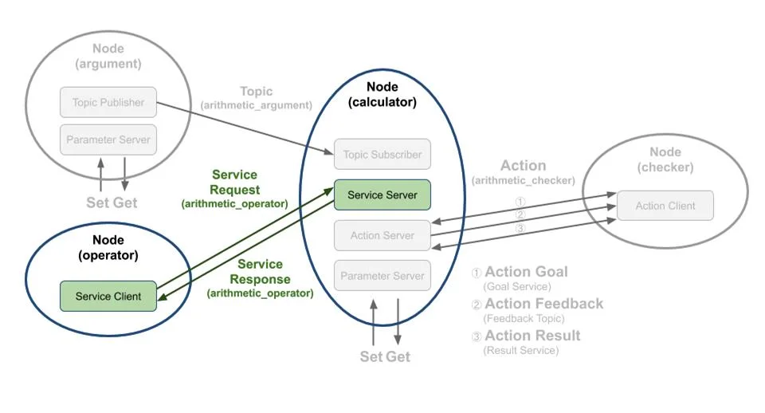
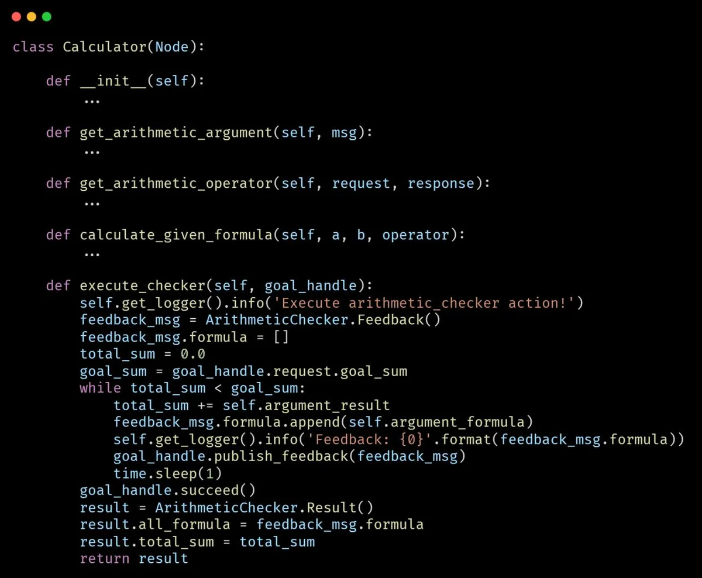
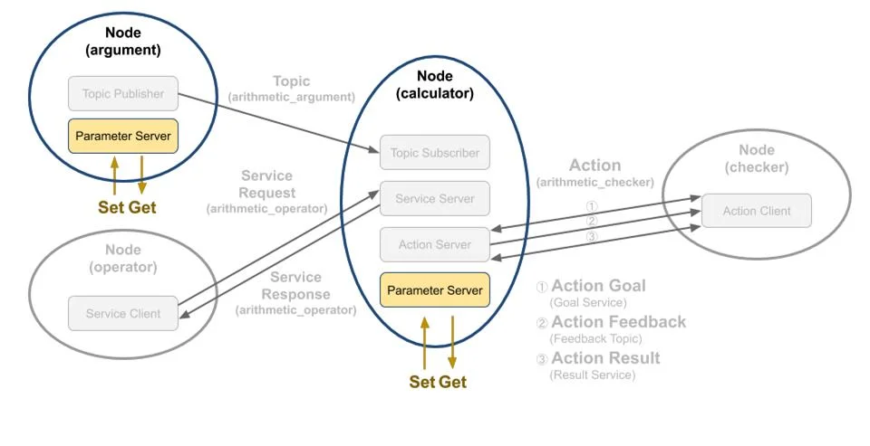

ROS2 입문 3차시 - 인터페이스 프로그래밍 (1)¶
인터페이스프로그래밍(응용_1)¶
토픽퍼블리셔/ 토픽서브스크라이버¶
소스코드 참조
이 코드의 전체 내용은 Calculator 프로젝트 전체 소스코드 페이지에서 확인할 수 있습니다.
Argument 클래스설정¶
- Node클래스를rclpy.node 모듈에서 상속
- 생성자에'argument'라는 노드 이름으로 노드 초기화
QoS 설정¶
- rclpy.qos 모듈의QoSProfile 클래스를 이용하여 토픽퍼블리셔의QoS 설정 값 적용
- QoS 설정값: RELIABLE, KEEP_LAST, DEPTH 10, VOLATILE 토픽 프로그래밍 토픽퍼블리셔코드
- Node 클래스의create_publisher 함수를 사용하여 퍼블리셔 선언
- 토픽 타입: ArithmeticArgument
- 토픽 이름: 'arithmetic_argument
- 'QoS 설정: 이전에 설정한QOS_RKL10V 사용
ararithmetic_argument_publisher 선언¶
create_timer 함수를이용하여1초마다publish_random_arithmetic_arguments 함수실행설정¶
create_publisher에서의설정들은퍼블리시를위한기본설정¶
실제토픽발행이이루어지는부분은publish_random_arithmetic_arguments 함수¶
- 타이머 콜백 함수로1초마다 실행
- msg 변수를ArithmeticArgument() 클래스로 생성(지난‘토픽, 서 비스, 액션 인터페이스’ 강좌에서 작성한msg 인터페이스 활용)
- 토픽 생성 시간을get_clock().now().to_msg()로 가져와 msg.stamp에기록
- 랜덤 함수로0~9 사이의 숫자를float로 변환하여 msg.argument_a와msg.argument_b에저장
publish_random_arithmetic_arguments 함수¶
- 실제로 토픽 발행이 이루어지는 함수로 우리가 발행 시간 및 변수a, b를 저장한msg 메시지를 퍼블리시한다는 의미
arithmetic_argument_publisher.publish(msg) 함수¶
- get_logger().info() 를사용하여디버깅목적으로변수a, b 값을 터미널에 표시
로그출력¶
- 토픽 퍼블리셔 노 드와 마찬가지로Node 클래스 상속
- 생성자에서'calculator'라는 이름으로 노드 초기화
- 토픽서브스크라이버, 서비스 서버, 액션 서버를 포함하여 코드가 길기 때문에 전체 코드는 생략
- 여기서는토픽서브스크라이버관련코드만설명
- Calculator 클래스 설정
- QoSProfile 클래스를이용하여토픽서브스크라이버의 QoS 설정 적용
- QoS 설정값: RELIABLE, KEEP_LAST, DEPTH 10, VOLATILE (토픽 퍼블리셔와 동일 설정)
- QoS에 대한 자세한 내용은'DDS의QoS(Quality of Service)' 강좌 참고
- 제일 중요한 설정으로Node 클래스의create_subscription 함수를이용하여서브스크라이버로선언
- get_arithmetic_argument라는 콜백 함수를 지정하여 퍼블리셔로부터 메시지를 서브스크라이브 할 때마다 실행되는 함수를 지정
- ReentrantCallbackGroup으로callback_group을 지정하여 콜백 함수를 병렬로 실행할 수 있게해 주며 뒤에서 설정
- 이후 설명할MultiThreadedExecutor와 함께 사용됨
- arithmetic_argument_subscriber 설정
- callback_group
- MutuallyExclusiveCallbackGroup이 기본 설정으로 사용됨
- MutuallyExclusiveCallbackGroup: 한 번에 하나의 콜백 함 수만 실행하도록 제한
- ReentrantCallbackGroup: 제한 없이 콜백 함수를 병렬로 실행 가능 토픽 프로그래밍 토픽서브스크라이버코드 토픽 프로그래밍 토픽서브스크라이버코드
- 콜백 함수인 이 함수는'arithmetic_argument'이라는 토픽 이름에ArithmeticArgument 타입의 메시지를 서브스크라이브하게 되면 실행됨
- 서브스크라이브한msg의argument_a와argument_b를 멤버 변수에 저장하고, get_logger().info() 함수를 이용하여 토픽으로 받은 시간, 변수a, b 값을 화면에 표시
- get_arithmetic_argument 토픽 프로그래밍 토픽퍼블리셔& 서브스크라이버복습
토픽퍼블리셔¶
(데이터를 송신하는 프로그램) - Node 설정 - create_publisher 설정 - 퍼블리시 함수 작성
토픽서브스크라이버¶
(데이터를 수신하는 프로그램) - Node 설정 - create_subscription 설정 - 서브스크라이브 함수 작성
이번목표¶
- 실행 노드를 어떻게 설정하여 사용 가능하게 만드는지 설명
- calculator: 이강좌에서다룬토픽서브스크라이버노드
- argument: 토픽퍼블리셔노드 토픽 프로그래밍 노드 실행 코드
entry_points 설정¶
- setup.py의entry_points는 실행 가능한 콘솔 스크립트 이름과 호출 함수를 지정
- 'ros2 run' 명령어로 각 노드를 실행할 수 있도록4개의 노드entry_points 추가
노드파일경로¶
- argument 노드: ex_calculator 패키지의arithmetic 폴더의argument.py main문에 실행 코드 포함
- operator 노드: ex_calculator 패키지의arithmetic 폴더의operator.py main문에 실행 코드 포함
- calculator 노드: ex_calculator 패키지의calculator 폴더의main.py main문에 실행 코드 포함
- checker 노드: ex_calculator 패키지의checker 폴더의main.py main문에 실행 코드 포함 토픽 프로그래밍 노드 실행 코드
argument 노드¶
- main 함수로rclpy.init를 이용하여 초기화
- Argument 클래스를argument라는 이름으로 생성
- rclpy.spin 함수를 이용하여 생성한 노드를spin 시켜 지정된 콜백 함수 실행
- 종료(ctrl + c)와 같은 인터럽트 시그널 예외상 황에서는argument를 소멸시키고 rclpy.shutdown 함수로 노드를 종료 토픽 프로그래밍 노드 실행 코드
노드 실행 코드
calculator 노드초기화¶
- rclpy.init를 이용하여ROS2 초기화
- Calculator 클래스를calculator라는 이름으로 생성
- MultiThreadedExecutor를 사용하여4개스 레드로 구성된executor 생성
MultiThreadedExecutor 설정¶
- 스레드 풀(thread pool)을 사용하여 콜백을 병렬로 실행
- num_threads로스 레드 수를 지정 가능
- 콜백을 병렬로 처리 가능하여ReentrantCallbackGroup과 함께 사용 시 병렬 실행 지원
콜백함수의병렬처리설정¶
- create_subscription(), create_service(), ActionServer(), create_timer() 등의 함수로 설정된 콜백 함수들의 병렬 처리 가능
executor와노드실행¶
- calculator 노드를MultiThreadedExecutor에추가
- executor.spin()으로노드를 실행하여 지정된 콜백 함수 실행 가능’
종료처리¶
- 인터럽트시그널(Ctrl + C) 발생시, executor, calculator의 액션 서버(별도 소멸 필요), calculator 노드를 소멸
- rclpy.shutdown으로노드를 종료
서비스 클라이언트/서버
-
operator node arithmetic_operator 이라는 서비스 이름으로calculator 노드에게 연산자(+, -, *, /)를 서비스 요청(Request) 값으로 보냄
-
calculator node 서브스크라이브하여 저장하고 있는 변수a, b와operator 노드로부터 요청 값으로 받은 연산자 를 이용하여 계산(a 연산자b)하고operator 노드에게 연산의 결과 값을 서비스 응답(Response) 값으로 보냄 서비스 요청을 하는 서비스 클라이언트와 서비스 응답을 하는 서비스 서버를 작성해 볼 것이다. 여기서 서비스 요청 값으로는 연산자(+, -, *, /)를 임의로 선택 후에 보낼 것이고 기존에 저장한 변수a, b를 요청 값으로 받은 연산자로 계산하여 결과 값을 서비스 응답 값으로 보내는 프로 그 램을 짜 볼 것이다. 강좌 진행에 앞서서 서비스에 대한 자세한 내용은‘ROS2 서비스(service)’ 강좌를 참고하도록하자
서비스 클라이언트/서버

src/ex_calculator/ex_calculator/calculator/calculator.py
src/ex_calculator/ex_calculator/calculator/calculator.py
calculator 노드초기화¶
- 변수(a, b)와operator 노드로부터 요청 값으로 받은 연산자를 이용해 계산 수행
- 연산 결과를operator 노드에 서비스 응답 값으로 전송
서비스서버설정코드¶
- 서비스 서버 선언: arithmetic_service_server를Node 클래스의create_service 함수로 선언
- 서비스 타입: ArithmeticOperator
- 서비스 이름: 'arithmetic_operator’
- 콜백 함수: get_arithmetic_operator (서비스 요청 시 실행)
- callback_group 설정: 멀티 스레드 병렬 콜백 함수 실행 지원
- 콜백을 병렬로 처리 가능하여ReentrantCallbackGroup과 함께 사용 시 병렬 실행 지원
콜백함수역할¶
- 콜백 함수인get_arithmetic_operator이 실제 서비스 요청에 해당되는 특정 수행 코드가 수행되는 부분
src/ex_calculator/ex_calculator/calculator/calculator.py
get_arithmetic_operator 함수¶
- 매개변수:
- request와response는ArithmeticOperator() 클래스로 생성된 인터 페이스
- request: 서비스 요청 데이터
- response: 서비스 응답 데이터
함수의역할¶
- 서비스 요청 시 실행되는 콜백 함수
- request에서 받은 연산자와, 토픽서브스크라이버가전달받아 저장한 변수(a, b)를 사용해 연산 수행
- 연산 결과를 서비스 응답 값(response)으로 반환
연산과정¶
- request.arithmetic_operator를calculate_given_formula 함수에 전달하여 연산 수행 연산 결과를response.arithmetic_result에 저장
- 관련 수식을get_logger().info()를 통해 문자열로 출력하여 화면에 표시
src/ex_calculator/ex_calculator/calculator/calculator.py
calculate_given_formula 함수와같이인수a와b, 그리고연산자(operator)를가지고¶
사 칙 연산을 수행 후 결과 값을 반환
서비스 서버 실행 코드 src/ex_calculator/ex_calculator/calculator/main.py - 서비스 서버(calculator 노드) : 토픽서브스크라이버, 서비스 서버, 액션 서버를 역할을 하는 복합 기능의 노드 - 실행 코드에 대한 설명은 이전 강좌인'토픽 프로그래밍(Python)' 참조
src/ex_calculator/ex_calculator/arithmetic/operator.py
src/ex_calculator/ex_calculator/arithmetic/operator.py
Operator 클래스초기화¶
- rclpy.node 모듈의Node 클래스 상속
- 생성자에서 노 드 이름을'operator'로 초기화
arithmetic_service_client 설정¶
- Node 클래스의create_client 함수를 이용하여 서비스 클라이언트로 선언
- 서비스의 타입: ArithmeticOperator(서비스 서버와 동일)로 선언하였고
- 서비스 이름: ‘arithmetic_operator’로 선언하였다
wait_for_service 함수¶
- 서비스 요청 가능 여부를 위해0.1초간격으로 서비스 서버가 실행되어 있는지 확인
src/ex_calculator/ex_calculator/arithmetic/operator.py
서비스클라이언트의목적: 서비스서버에게연산에필요한연산자를전달¶
서비스요청설정: 서비스인터페이스ArithmeticOperator.Request() 클래스로¶
service_request를 선언 후random.randint() 함수를 이용하여 특정 연산자를 self.request의arithmetic_operator 변수에 저장
send_request 함수: 실질적인서비스클라이언트의실행코드로서비스요청값을서버에¶
보내고 응답 값을 수신
call_async(self.request) 함수로서비스요청수행¶
서비스상태및응답값을담은futures를반환¶
서비스 클라이언트 노드 실행 코드 src/ex_calculator/setup.py
operator 노드(서비스클라이언트노드)¶
- 'ex_calculator' 패키지의 일부로, 패키지 설정 파일의'entry_points'에 콘솔 스크립트의 이름과 호출 함수를 기입(ex_calcurator.arithmetic.operator:main)하여'ros2 run' 과 같은 노 드 실행 명령어를 통하여 각각의 노드를 실행
- ex_calculator 패키지의arithmetic 폴더에operator.py의main문에 실행 코드가 담겨져 있음
서비스 클라이언트 노드 실행 코드 src/ex_calculator/ex_calculator/arithmetic/operator.py - rclpy.init를 이용하여 초기화 - Operator 클래스를operator라는 이름으로 생성한 후future = operator.send_request()로 서비스 요청을 전송 후 응답 값 수신 - rclpy.spin_once 함수로 노드를 주기적으로spin시켜 지정된 콜백 함수가 실행 - 각spin마다노드의 콜백 함수가 실행 - 서비스 응답 값을 수신 시future의done 함수를 이용해 요청 값을 제대로 받았는지 확인 - 결과 값을service_response = future.result()로저장 - get_logger().info() 함수를 이용하여 화면에 서비스 응답 값에 해당되는 연산 결과 값을 표시 - ‘ctrl + c'와 같은 인터럽트 시그널 예외 상황에서 operator를 소멸시키고rclpy.shutdown 함수로 노 드 를 종료
서비스 클라이언트 노드 실행 코드 src/ex_calculator/ex_calculator/arithmetic/operator.py - 서비스 클라이언트는 한 번 실행 후 종료되는 방식으로, 토픽과 같은 지속적인 수행은 없음 - 다만, 예제에서는 원하는 시점에 서비스 요청을 다시 보낼 수 있도록user_trigger 변수와 input(＇xxxxx＇)을 사용해 반복 실행 가능하게 구성 - 최초1회에 한해서 사용자 입력 없이 바로 임 의의 연산 자를 서비스 요청 값으로 송신 - 그 이후 노드가 종료되기 전까지, 사용자의 입 력을 받을 때마다 임의의 연산 자를 랜덤으로 선택해 서비스 요청 값으로 송신 - 즉. 최초 요청 후 서비스 재요청이 필요할 경우, 터미널 창에서 엔터 키를 눌러operator 실행 - 연산자 선택은 사 칙 연산자(+, -, * , /) 중 하나가 랜덤으로 선택되어 송신됨
액션 클라이언트/서버 다음 그림과 같은 액션 목표(action goal)를 지정하는 액션 클라이언트와 액션 목표를 받아 특 정 태스크를 수행하면서 중간 결과 값에 해당되는 액션 피드백(action feedback)과 최종 결과 값 에 해당되는 액션 결과(action result)를 전송하는 액션 서버를 작성해 볼 것이다.
src/ex_calculator/ex_calculator/calculator/calculator.py
src/ex_calculator/ex_calculator/calculator/calculator.py
arithmetic_action_server : rclpy.action¶
모듈의ActionServer 클래스를 이용하여 액션 서버로 선언 - 액션 타입: ArithmeticChecker - 액션 이름: 'arithmetic_checker’ - 콜백 함수: execute_checker(액션 클라이언트로부터 액션 목표를 받으면 실행됨) - 멀티 스레드 병렬 콜백 함수 실행을 위한 callback_group 설정 적용
이러한설정들은액션서버를위한기본¶
설정이고 실제 액션 목표를 받은 후에 실행되는 콜백 함수는execute_checker 함수임을 알아 두자
src/ex_calculator/ex_calculator/calculator/calculator.py
goal_handle 매개변수¶
- rclpy.action 모듈의ServerGoalHandle 클래스로 생성된 액션 상태 처리용으로execute, succeed, abort, canceled 등 액션 상태에 따른 관련 함수 호출 가능
- publish_feedback을 통해 피드백 퍼블리시 가능 Get_logger().info() 함수를 이용해 터미널 창에 액션 서버 시작 표시 ArithmeticChecker.Feedback()을 통해 액션 피드백을 보낼feedback_msg 변수 선언 실제 피드백에 해당되는 feedback_msg.formula와 연산 합계 값을 담을 total_sum 변수 초기화 goal_handle를 이용하여 goal_handle.request.goal_sum에서 액션 목표 값을 불러옴
## ## ##

¶src/ex_calculator/ex_calculator/calculator/calculator.py
•¶
total_sum: argument_result(매번 계산되는 연산 결과 값)를 누적한 합계 액션 목표 값(goal_sum)과total_sum이 액션 목표 값(goal_sum)을 넘을 때까지 연산식(argument_formula)을 액션 피드 백(feedback_msg.formula)에저장
피드백값은디버깅을위해¶
get_logger().info()을 통해 터미널 창에 출 력후goal_handle.publish_feedback() 함 수를 통해 액션 클라이언트로 전송
src/ex_calculator/ex_calculator/calculator/calculator.py
액션목표를달성했다는상태전환함수인¶
goal_handle.succeed()를 실행시켜 액션 클라이언트에게 현재의 액션 상태를 알림
액션결과값인all_formula에계산식전체¶
를 저장하고total_sum에 연산 합계를 저 장하여 액션 결과 값인result은리턴
액션 서버 실행 코드 src/ex_calculator/ex_calculator/calculator/main.py
액션서버인calculator 노드는토픽서브¶
스크라이버, 서비스 서버, 액션 서버를 역 할을 하는 복합 기능의 노드
해당코드에대한설명은토픽프로그래밍¶
(Python) 강좌 참조
src/ex_calculator/ex_calculator/checker/checker.py
src/ex_calculator/ex_calculator/checker/checker.py
Checker 클래스¶
- rclpy.node 모듈의Node 클래스를 상속
- 생성자에서 노 드 이름을‘checker'로 초기화
액션클라이언트에서수행하는액션목표¶
는 토픽과 달리, 필요시에만 비정기적으로 실행됨
여기서는예시를위해액션목표를main¶
함수에서 한 번만 실행
rclpy.action모듈의ActionClient 클래스¶
이용하여 액션 클라이언트 선언 - 액션 타입: ArithmeticChecker - 액션 이름: 'arithmetic_checker’
src/ex_calculator/ex_calculator/checker/checker.py
send_goal_total_sum 함수¶
- 액션 목표를 액션 서버에게 전송하고, 액션 피드백 및 결과 값을 받기 위한 콜백 함수 지정
액션클라이언트가액션서버에연결¶
시도를 함
연결에문제가있을때에while문을¶
반복하게 되고 문제 없이 연결되었을 때에는 다음 구문으로 넘어감
src/ex_calculator/ex_calculator/checker/checker.py
액션메시지설정¶
- ArithmeticChecker.Goal() 클래스로 액션 메시지(goal_msg) 선언
- goal_msg.goal_sum으로 액션 목 푯 값 설정
비동기액션전송및피드백설정¶
- ActionClient 클래스의send_goal_async 함수를 이용해 설정해 둔 액션 메시지를 매개 변 수로 전달
- 액션 피드백을 수신을 위한 콜백 함수로 get_arithmetic_action_feedback 지정
액션결과수신설정¶
-
send_goal_async으로 선언된 비동기 작업 (future task)인send_goal_future의 add_done_callback 함수를 통해 액션 결과 값을 받을 때 사용할 콜백 함수로 get_arithmetic_action_goal를선언
-
액션 클라이언트 선언: arithmetic_action_client
- 액션 목 푯 값 전달 함수 선언: send_goal_future
- 액션 피드백 값 콜백 함수 선언: get_arithmetic_action_feedback
- 액션 상태 값 콜백 함수 선언: get_arithmetic_action_goal
- 액션 결과 값 콜백 함수 선언: get_arithmetic_action_result
src/ex_calculator/ex_calculator/checker/checker.py
액션피드백값콜백함수¶
- 액션 피드백을 액션 서버로부터 전달 받으면get_arithmetic_action_feedback 콜백 함수 실행
- 피드백인feedback_msg.feedback.formula 값을 받아get_logger().info()으로 터미널 창에 출력
액션상태값콜백함수¶
- 비동기 작업(future task)으로 생성된 send_goal_future에대해add_done_callback 함수를 사용해 콜백 함수 설정
- 이 콜백 함수는 액션 서버가 액션 목 푯 값을 수신했을 때Goal State Machine의 상태가 accepted인지 확인하여 처리
- 액션 목 푯 값을 문제없이 전달된 경우, 액션 결과를 받을 콜백 함수를 get_arithmetic_action_result로설정
src/ex_calculator/ex_calculator/checker/checker.py
앞서지정한"액션결과값콜백함수"¶
는 비동기future task로 현재의 상태값 (status)과 결과 값(result)을수신
상태값이STATUS_SUCCEEDED 일때¶
액션 서버로부터 전달받은 액션 결과 값 인 계산 식(action_result.all_formula)과 연산 합계(action_result.total_sum)를 터미널 창에 출력
액션 클라이언트 노드 실행 코드 src/ex_calculator/setup.py
액션클라이언트노드인checker 노드는¶
'ex_calculator' 패키지의 일부로 패키지 설정 파일 내부의'entry_points'에실행 가능한 콘솔 스크립트의 이름과 호출함 수로 기입(checker= ex_calculator.checker.main:main)
이와같이argument, operator,¶
calculator 노드도 작성하여'ros2 run' 과 같은 노드 실행 명령어를 통해 각각의노 드 를 실행 가능하도록함
액션 클라이언트 노드 실행 코드 src/ex_calculator/ex_calculator/checker/main.py
main 함수실행코드:¶
- rclpy.init를통해ROS2 노드 초기화
- Checker 클래스를checker라는 이름으로 생성
- 액션 목 푯 값을 전달하는send_goal_total_sum 함수 실행
실행인자(args.goal_total_sum) 사용¶
- 프로그램의 실행 시 인자를 사용해 사용자가 노드를 실행시킬 때 액션 목 푯 값을 설정 가능.
- 목표 값이 지정되지 않았을 경우 기본 값으로50이 입력됨
- 실행 인자에 대한 자세한 설명은 추후 강좌에서 다룰 예정
콜백함수실행및유지¶
- rclpy.spin 함수를 이용하여rclpy의 콜백 함수가 지속적으로 실행되도록 설정
종료및자원해제¶
- 종료시('Ctrl + c'와 같은 인터럽트 시그널) checker 객체 소멸 및rclpy.shutdown 함수로 노 드 종료
- 추가적으로 토픽이나 서비스와는 달리 액션 클라이언트는 'checker.arithmetic_action_client.destroy()' 와 같이 별도로 소 멸시켜야함
파라미터 프로그래밍 파라미터 우리는 이전 강좌에서 토픽, 서비스, 액션 관련 프로그래밍을 익히기 위하여argument, operator, calculator, checker 노드를 작성해 보았다. 이들 노드 중에서 다음 그림과 같이argument 노드와calculator 노드는 파 라미터를 사용하고 있다. argument 노드는QoS 설정과 랜덤으로 생성되는 변수a, b의 랜덤 생성 범위를 파 라미 터를 이용했었고calculator 노드는QoS 설정을 사용하였다. 우리는 여기서argument 노드에서 사용되 는 파라미터에 대해 자세히 알아볼 것이다.

파라미터 프로그래밍 파라미터 설정 1. declare_parameter 함수 2. get_parameter 함수 3. add_on_set_parameters_callback 함수
argument 노드에서파라미터를선언하고파라미터값이변경되는함수에대해¶
자세히 알아보자
Argument 클래스의생성자부분에서다음과같은코드가있다. ROS2에서파라¶
미터를 사용하려면 하기와 같이 크게3가지의 요소가 필요
1번의declare_parameter 함수는노드에서사용할파라미터의고유이름을지¶
정 하고 초 깃 값 설정(파라미터에 대한 설명이 들어가는descriptor은 생략함)
2번의get_parameter 함수는노드에서사용할파라미터의파라미터고유이름¶
을 이용해 불러옴. 이는 주로launch 파일에서 선언된*.yaml 형태의 파라미터 파일의 값을 불러오는 데 사용됨
3번의add_on_set_parameters_callback 함수는서비스형태로파라미터변경¶
요청이 있을 때 사용되는 함수로 지정된 콜백 함수를 호출
파라미터 프로그래밍 파라미터 설정 src/ex_calculator/ex_calculator/checker/main.py
파라미터 프로그래밍 파라미터 설정 src/ex_calculator/ex_calculator/checker/main.py
파라미터선언및초기설정¶
- declare_parameter 함수로'max_random_num'과 같은 파라미터 선언
- 노드 실행 시get_parameter 함수가 지정된 파라 미터 파일에서 초 깃 값을 불러와 설정
파라미터변경요청처리¶
- 파라미터 변경 요청 발생 시 add_on_set_parameters_callback을 통해 지정된 콜백 함수인update_parameter 함수 실행
- update_parameter 콜백 함수에서는 변경하려는 파라미터의 이름과 타입이 동일한 경우 해당 파 라 미터 값 변경
argument 노드에서는파라미터값으로QoS¶
설정과 랜덤으로 생성되는 변수a, b의랜덤 생성 범위를 파라미터를 이용하여 설정.
min_random_num 값과max_random_num¶
값을 이용하여 퍼블리시할 때 변수a, b의랜 덤 생성 범위를 변경함
파라미터 프로그래밍 파라미터 설정 파라미터 사용 방법(CLI)
파라미터 프로그래밍 파라미터 사용 방법(서비스 클라이언트)
앞설명에서는CLI를이용하여파라미터를조회하고, 변경하고읽는실습을진행했다.¶
그러나 파라미터는CLI뿐만 아니라 다른 노드의 소스 코드에서도 읽고 변경할 수 있다. 예를 들어SetParameters라는 인터페이스를 이용하면 서비스 클라이언트와 유사한 방식으로 서비스 요청을 통해 파라미터를 변경할 수 있다.
여기서클라이언트를선언하고서비스를요청하는방식은기존의서비스클라이언트¶
와 완전히 동일하다. 다만, 서비스 요청 값에 파라미터의 이름, 형태, 값을 지정하는 게 다르다. 이와 관련된 세부 내용은set_max_random_num_parameter 함수에서 확인 가능하다. 해당 함수에서는Parameter 클래스를 사용해name, type, integer_value 등을 매개 변수로 설정한다. 이를 통해A 노드에서B 노드의 파라미터를 변경할 수 있 게된다.
파라미터 프로그래밍 기본 파라미터 설정 방법(launch 설정)
참고로새롭게지정된.yaml 파일및.launch.py 파일을¶
ROS 파일 시스템에 맞추어 설치하게하려면 하기와 같이 python 패키지 설정 파일'setup.py'에 옵션을 추가해야 한다.
launch 파일에특정파라미터파일을추가하면, 노드를실행¶
할 때 해당 파일의 파라미터 이름과 값을 참조하여 자동으로 초기화 가능 src/ex_calculator/launch/arithmetic.launch.py
실행 인자 프로그래밍
실행인자¶
- 프로그램 실행 시 추가로 입력되는 인 수로, main 함수의 매개변수로 사용됨
- 실행 명령어와 함께 전달되어 프로그램 동작에 영향을 줌
예시: $ ros2 run ex_calculator checker –g 100¶
- ros2 run: ROS2 명령어
- ex_calculator: 패키지 이름
- checker: 실행할 노드
- -g 100: 실행 인자, 여기서는GOAL_TOTAL_SUM 값을100으로 설정
- Parameter 매개변수
- Argument 실행 인자
참고로파라미터(parameter)는매개변수로풀이하고아규먼트(argument)¶
는 실행 인자라 풀이된다. C++ 언어에서는 이들의 분류를 더 확실히 하는 편인데Parameter는 함수 선언 시 사용되고Argument는 함수 호출 시의 인수라고 생각하면 된다
실행 인자 프로그래밍 ROS2 에서의 실행 인자 처리
C++¶
- main 함수에서argc를 통해 인자 개수를 받고, argv로 인자를 배열 형태로 받는 형식으로 인자 처리
- argc와argv를rclcpp의init 함수에 인자로 전달
Python(인수무시할때)¶
- 두 번째 예제와 같이args를None으로 설정 후에rclpy 모듈의init 함수에 바로 넘김
Python(인수사용할때)¶
- argv의 첫 번째 인자(실행 명 및 실행 경로 정보)를 삭제한 후argv에저장.
- 수정된argv를rclpy모듈의init 함수에 넘김
- 이때C++과는 달리argparse 모듈을 이용해 실행 인자를 위한 구문 해석 프로그램 작성 필요 ※ 참고로argc, argv, args는 다음과 같은 의미로 사용됨
- argc argument count
- argv argument vector or value
- args arguments
실행 인자 프로그래밍 실행 인자의 구문 해석
실행인자구문¶
- Checker 노드의main 함수에서 실행 인자 처리 코 드가 구현되어 있음
- 해당 코드를 통해 실행 인자를 다루어 볼 것
- 실행 인자의 구문 해석 프로그램은python의 argparse 모듈을 이용하여 파서를 선언 후 사용할 실행 인자 값을 지정하는 것이 주를 이룸
- 이를 순서대로 나열하면 다음과 같음 1. 파서 만들기(parser = argparse.ArgumentParser) 2. 인자 추가하기(parser.add_argument) 3. 인자 파 싱하기(args = parser.parse_args()) 4. 인자 사용하기(args.xxx) src/ex_calculator/ex_calculator/checker/main.py
실행 인자 프로그래밍 실행 인자의 구문 해석
- 파서 만들기
- argparse 모듈의ArgumentParser 객체를parser라는 이 름으로 선언
-
여기서formatter_class으로argparse 모듈의 가장 기본적인 형식을 사용하도록 설정 src/ex_calculator/ex_calculator/checker/main.py
-
인자 추가하기
- 인자 파 싱하기
-
parse_args() 메서드를 통해 인 자를 파싱
-
인자 사용하기
- 인자를 사용하려면args 변수를 통해 파 싱하여 대입
- 예를 들어add_argument로 추가한'--goal_total_sum’ 인자 는'args.goal_total_sum’ 형태로 사용 가능
- add_argument() 메서드를 호출하고 인자의 내용을 채워 실행 인자 추가 가능.
- 인자 이름: -g(줄인 이름), --goal_total_sum(풀네임)
- 데이터 타입: int형
- 기본값: 50
- 설명: 지정 인자에 대한 설명 추가(프로그램을 실행 시'-h'와 같이 실행 인자에 대한 도움말을 실행하면 볼 수 있는 문구)
런치 프로그래밍 ROS2 Launch System
ROS2에서노드실행:¶
- ros2 run 명령어를 사용하여 특정 패키지의 하나의 노드를 실행 가능
- 이 명령어로도 단일 노드 실행에는 문제가 없지만, 일반적으로ROS에서는 여러 노드를 동시에 실행하며 상호 작용하게 설정하는 경우가 많음
- 기존 패키지의 노드를 사용하거나 다양한 옵션을 입력하여 실행하는 경우도 빈번함
- 이를 위해 하나 이상의 정해진 노드를 실행시킬 수 있는'launch' 라는 개념이 존재
- 더불어, 노드를 실행할 때 패키지의 매개 변수나 노드 이름 변경, 노드 네임 스페이스 설정, 환경 변수 변경 등의 옵션을 사용할 수 있음
- ROS1에서는roslaunch로*.launch XML 파일을 사용해 노드를 설정하며, 태그별 옵션을 제공
- 반면ROS2에서는 더 다양한 환경과 기능을 추가하기 위하여 기존XML 방식 이외에Python 방식도 추가됨
이강좌에서는기존XML 방식보다더활용도가높은Python 방식을다룸¶
ROS2 Launch System에대한더자세한설명은참고자료문서및코드를참고¶
▷https://design.ros2.org/articles/roslaunch.html ▷https://design.ros2.org/articles/roslaunch_xml.html ▷https://github.com/ros2/launch/tree/master/launch_yaml ▷https://github.com/ros2/launch
런치 프로그래밍 ROS2 Launch System
새로운런치파일생성:¶
- 'ex_calculator' 패키지에 새로운launch 파일을 생성
- launch 파일의 역할
- argument 노드와calculator 노드를 실행
- 두노드에서 사용할 파라미터 파일을 설정
launch 파일생성방법¶
- 원하는 패키지에launch 이라는 폴더가 있어야함
- 해당 폴더에'*.launch.py' 형식의launch 파일 생성
- 여기서는'arithmetic.launch.py' 이라는 파일 명을 사용
- 'arithmetic.launch.py' 파일은 하기 위치에 위치해 있음 └ ex_calculator/launch/arithmetic.launch.py
런치 프로그래밍 launch 작성
launch 파일의기본구조:¶
- generate_launch_description 메소드를 정의하여 사용
- 메소드 내용으로'LaunchConfiguration' 클래스를 이용하여 필요시 실행 관련 설정 선언
- 메소드의 리턴 값으로는'LaunchDescription' 클래스로 반환
'arithmetic.launch.py' 파일의LaunchConfiguration 설정¶
- 'LaunchConfiguration' 클래스의 생성자로'param_dir' 라는 파라미터 디렉토리를 설정하는 부분
- 'ex_calculator' 패키지의'param'폴더에 위치한 'arithmetic_config.yaml' 파라미터 설정 파일을 의미
- 해당 파일의 내용은 앞서 다룬'파라미터 프로그래밍 (Python)’ 참고
런치 프로그래밍 launch 작성
remappings 기능(원본코드에는존재하지않음) :¶
- 특정 이름을 변경할 수 있는 기능
- 다음 예제와 같이'/arithmetic_argument' 토픽 이름을'/argument' 이라는 토픽 이름으로 변경할 수 있음
- 내부 코드 변경 없이 토픽, 서비스, 액션 등의 고유 이름을 변경할 수 있는 유용한 기능이므로 알아 두기 추천 런치 프로그래밍 launch 작성
launch의namespace 기능:¶
- 노드, 토픽, 서비스, 액션, 파라미터 등의 고유 이름을 독립적으로 그룹 핑하여 네트워크를 구성할 수 있는 기능
- 변경 방법
- 방법1 : 각 노드를 실행시킬 때ROS 변수 중 하나인 ns(namespace)를 입력하여 변경
- 방법2 : launch 파일로 실행시킬 때namespace 라는 항목을 변경
namespace 설정방법¶
- LaunchConfiguration와DeclareLaunchArgument을통해 namespace를지정
- 예제에서는 환경 변수로 지정한'ROS_NAMESPACE' 변수를 읽어 오도록 설정
- 'export ROS_NAMESPACE=robot_1' 과 같은 구문을 터미널에서 실행하거나＇~/.bashrc에 미리 등록
- Node 클래스에서namespace를 지정하면 실행 시 모든 노 드 이름과 해당 노드의 토픽, 서비스, 액션, 파라미터 등 고유 이름이 변경됨
- 활용예: namespace는 복수의 로봇을 사용할 때 동일 프로 그램을 이용할 때 고유 이름을 사용함에 있어서 중복됨을 피할 수 있고 데이터를 구분 지어 사용할 수 있음
런치 프로그래밍 launch 작성
generate_launch_description 함수¶
의return 값이 너무 많을 경우 LaunchDescription의add_action 함수를 이용하여 정리 가능
이렇게구성하면예제와같이좀더¶
간결해짐
런치 프로그래밍 launch 작성
런치파일에서다른런치파일불러오기:¶
- 현재 패키지의 런치 파일 불러오기:
- 예를 들어, 현재 패키지가aaaaa라면, IncludeLaunchDescription을 사용하여 xxxxx.launch.py와yyyyy.launch.py를 불러올 수 있음
다른패키지의런치파일불러오기:¶
- 예를 들어, bbbbb 패키지의zzzzz.launch.py 파일을 불러 올 때는IncludeLaunchDescription과함께 get_package_share_directory 함수를 사용
- get_package_share_directory 함수에 불러올 패키지 명을 입력하여 특정 패키지의 런치 파일을 가져옴
런치파일모듈화의장점¶
- 하나의 런치 파일에서 동일 패키지의 노드 실행뿐 아니라, 다른 패키지의 런치 파일을 불러와 실행할 수 있음
- 특히, 직접 작성하지 않은 패키지의 런치 파일을 수정 없이 불러와 사용할 수 있어 편리함
- 널리 사용되는 유용한 기능이므로 참고할 것
런치 프로그래밍 패키지 빌드
Launch 파일사용을위한설치필요성:¶
- Launch 파일은Python 파일이므로 빌드 자체는 필요하지 않음
- 그러나ROS2 에코 시스템에서 사용하기 위해서는 패키지 빌드를 통해 정해진 위치에 설치해야함 install(DIRECTORY launch DESTINATION share/${PROJECT_NAME}/ )
언어에따른Launch 파일설정방법:¶
- C++ (RCLCPP 패키지 계열) :
- C++을 사용하는 경우, CMakeLists.txt의install 구문에launch 폴더 명만 기재하여 설정 가능
- Python (rclpy 패키지 계열) :
- Python을 사용하는 경우에는 별도의 설정이 필요하며, 이후에 설명 예정
런치 프로그래밍 패키지 빌드
rclpy 패키지계열¶
- Python 패키지 설정 파일(setup.py)의data_files 옵션에launch 폴더를 지정
- 효과: 패키지 소스 코드 내launch 폴더에 있는*.launch.py 파일들이 설치 폴더에 복사되어 위치하게 됨
런치 프로그래밍 launch 작성
런치파일을실행하려면ROS2의CLI 명령어중'ros2 launch'를사용하며사용방법¶
은 다음과 같음
위강좌에서설명한예제파일을실행시키려면다음과같이사용가능¶
즉ex_calculator 패키지의arithmetic.launch.py 런치파일을실행시키라는의미¶
이를실행시키면위에서설명한것처럼파라미터파일을공유하여사용하게되며¶
argument 노드와calculator 노드를 한 번에 실행시키게 됨
Jupyter Notebooks¶
triangle_turtle¶

if not rclpy.ok(): # 또는 hasattr(rclpy, '_rclpy') 등으로 체크
rclpy.init()
node = Node('triangle_turtle')
pub = node.create_publisher(Twist, '/turtle1/cmd_vel', 10)
msg = Twist()
[WARN] [1745315101.346933587] [rcl.logging_rosout]: Publisher already registered for provided node name. If this is due to multiple nodes with the same name then all logs for that logger name will go out over the existing publisher. As soon as any node with that name is destructed it will unregister the publisher, preventing any further logs for that name from being published on the rosout topic.
python
def main():
rclpy.init()
# 노드 생성
node = rclpy.create_node('triangle_drawer')
publisher = node.create_publisher(Twist, '/turtle1/cmd_vel', 10)
move_cmd = Twist()
turn_cmd = Twist()
move_cmd.linear.x = 2.0
turn_cmd.angular.z = 2.0
# 삼각형 그리기
for _ in range(3):
publisher.publish(move_cmd)
time.sleep(1.5)
publisher.publish(Twist()) # 정지
time.sleep(0.5)
publisher.publish(turn_cmd)
time.sleep(1.2)
publisher.publish(Twist()) # 정지
time.sleep(0.5)
print("삼각형 그리기 완료")
node.destroy_node()
rclpy.shutdown()
if __name__ == '__main__':
main()
---------------------------------------------------------------------------
RuntimeError Traceback (most recent call last)
Cell In[66], line 34
31 rclpy.shutdown()
33 if __name__ == '__main__':
---> 34 main()
Cell In[66], line 2, in main()
1 def main():
----> 2 rclpy.init()
4 # 노드 생성 5 node = rclpy.create_node('triangle_drawer')
File /opt/ros/humble/local/lib/python3.10/dist-packages/rclpy/__init__.py:88, in init(args, context, domain_id, signal_handler_options)
86 else:
87 signal_handler_options = SignalHandlerOptions.NO
---> 88 context.init(args, domain_id=domain_id)
89 # Install signal handlers after initializing the context because the rclpy signal
90 # handler only does something if there is at least one initialized context.
91 # It is desirable for sigint or sigterm to be able to terminate the process if rcl_init
92 # takes a long time, and the default signal handlers work well for that purpose.
93 install_signal_handlers(signal_handler_options)
File /opt/ros/humble/local/lib/python3.10/dist-packages/rclpy/context.py:70, in Context.init(self, args, initialize_logging, domain_id)
65 raise RuntimeError(
66 'Domain id ({}) should not be lower than zero.'
67 .format(domain_id))
69 if self.__context is not None:
---> 70 raise RuntimeError('Context.init() must only be called once')
72 self.__context = _rclpy.Context(
73 args if args is not None else sys.argv,
74 domain_id if domain_id is not None else _rclpy.RCL_DEFAULT_DOMAIN_ID)
75 if initialize_logging and not self._logging_initialized:
RuntimeError: Context.init() must only be called once
python
node.create_timer(0.1, timer_callback)
threading.Thread(target=rclpy.spin, args=(node,)).start()
Code Examples¶
turtlesim/tultle_move/¶
turtlesim/tultle_move/tultle_move/__init__.py¶
turtlesim/tultle_move/tultle_move/dist_turtle_action_server.py¶
import rclpy as rp
import time
import math
from rclpy.action import ActionServer
from rclpy.node import Node
from rclpy.executors import MultiThreadedExecutor
from turtlesim.msg import Pose
from turtle_msgs.action import DistTurtle
from geometry_msgs.msg import Twist
from tultle_move.subscriber_t import TurtlesimSubscriber
class TurtleSub_Action(TurtlesimSubscriber):
def __init__(self, ac_server):
super().__init__()
self.ac_server = ac_server
def callback(self, msg):
self.ac_server.current_pose = msg
class DistTurtleServer(Node):
def __init__(self):
super().__init__('dist_turtle_action_server')
self.total_dist = 0.0
self.is_first_time = True
self.current_pose = Pose()
self.previous_pose = Pose()
self.publisher = self.create_publisher(
Twist,
'/turtle1/cmd_vel',
10
)
self._action_server = ActionServer(
self,
DistTurtle,
'dist_turtle',
self.execute_callback
)
def calc_diff_pose(self):
if self.is_first_time:
self.previous_pose.x = self.current_pose.x
self.previous_pose.y = self.current_pose.y
self.is_first_time = False
dx = self.current_pose.x - self.previous_pose.x
dy = self.current_pose.y - self.previous_pose.y
diff_dist = math.sqrt(dx**2 + dy**2)
# ... (58 more lines)
turtlesim/tultle_move/tultle_move/multi_thread.py¶
import rclpy as rp
from rclpy.executors import MultiThreadedExecutor
from rclpy.node import Node
from tultle_move.publisher_t import TurtlesimPublisher
from tultle_move.subscriber_t import TurtlesimSubscriber
def main(args=None):
rp.init()
sub = TurtlesimSubscriber()
pub = TurtlesimPublisher()
executor = MultiThreadedExecutor()
executor.add_node(sub)
executor.add_node(pub)
try:
executor.spin()
finally:
executor.shutdown()
pub.destroy_node()
rp.shutdown()
if __name__=='__main__':
main()